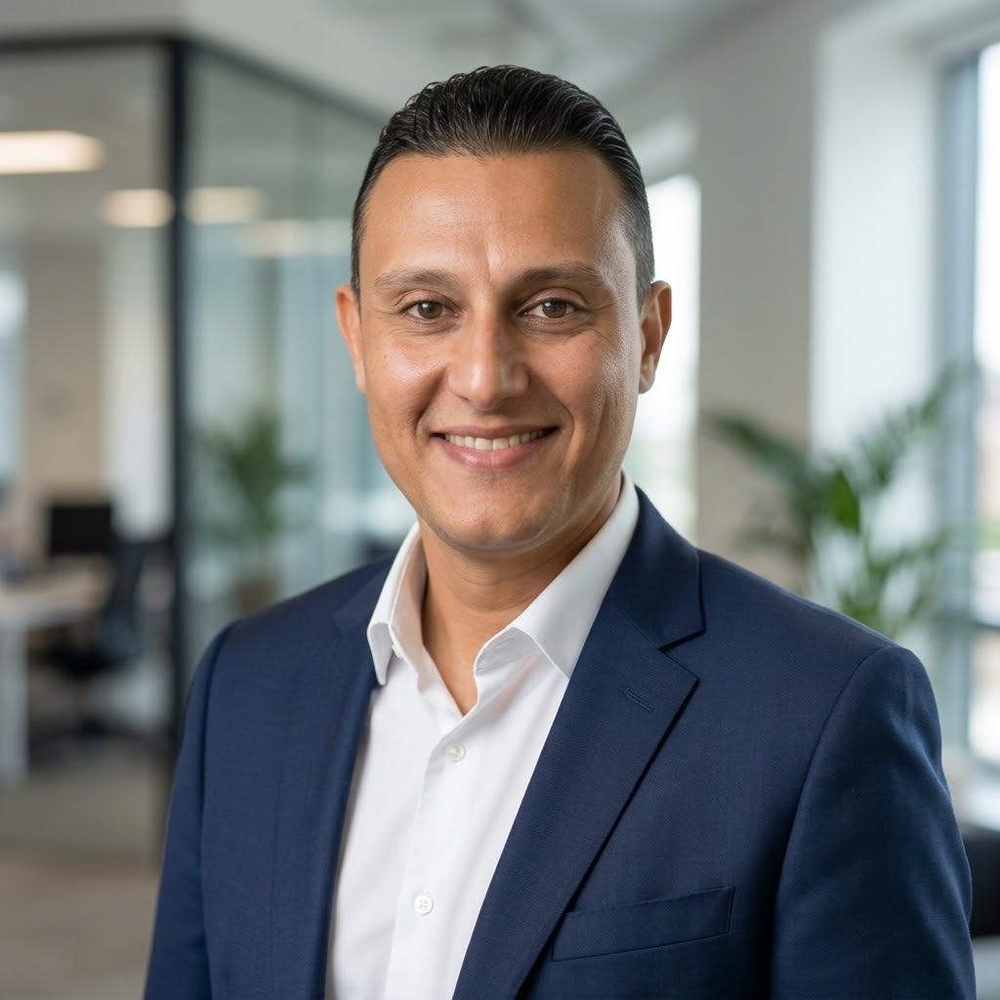

System administration
Enterprise Linux, Windows Server and directory services.
- Red Hat Enterprise Linux
- Oracle Linux
- CentOS / Ubuntu
- Windows Server
- Active Directory
- DNS · DHCP · Group Policy
CAIRO, EGYPT · ENTERPRISE IT & TECHNICAL LEADERSHIP
System Administration &
IT Operations Leader
Resilient systems. Clear leadership.
Dependable operations.
Bringing together 14+ years of enterprise IT experience, hands-on system administration and customer-focused technical leadership.

ENGINEERING WITH PERSPECTIVE
I work where enterprise technology meets the people who depend on it.
My background spans system administration, networking, security and technical service delivery. I combine an engineering mindset with team coordination, structured incident management and clear stakeholder communication.
From production support to planning infrastructure changes, my focus is practical: understand the dependencies, prioritize the work and help teams deliver a dependable service.
TECHNICAL EXPERTISE
Experience is shown by scope, with supporting knowledge separated from hands-on focus. No arbitrary skill scores.
Enterprise Linux, Windows Server and directory services.
Virtual platforms and service continuity.
Connectivity, network operations and access controls.
Platform operations and application connectivity support.
Recovery operations and storage dependencies.
Supporting tools and concepts; depth varies by technology.
SELECTED TECHNICAL WORK
A sanitized view of project areas from my professional background. Details describe technical scope; customer information and internal architecture are excluded.
12 project areas shown.
SERVICE CONTINUITY
MBSS is a biometrics matching system. This project area covers its RMS licensing dependencies across production, testing and recovery environments.
SYSTEM INTEGRATION
Application integration and the enterprise systems supporting connected services.
ENTERPRISE MIDDLEWARE
Middleware availability and application-to-database connectivity.
DATABASE OPERATIONS
Operational support for database availability, capacity and connectivity.
BUSINESS CONTINUITY
Readiness, redundancy and service recovery across enterprise environments.
VIRTUALIZATION
Cluster behavior, shared storage and virtual machine continuity.
VIRTUALIZATION
Virtual machine operations, platform health and infrastructure dependencies.
BACKUP & RECOVERY
Enterprise backup configuration, recovery and storage connectivity.
CHANGE COORDINATION
Infrastructure planning and technical coordination through a physical move.
ENTERPRISE STORAGE
Storage connectivity and availability for enterprise hosts.
DIRECTORY SERVICES
Identity services, DNS and application authentication dependencies.
NETWORKS & SECURITY
Enterprise connectivity, segmentation and secure access.
Project titles are descriptive. Technical scope is summarized without disclosing customer details or claiming unverified performance results.
BEYOND THE TECHNOLOGY
Technical leadership is a core part of my professional practice.
Helping engineers prioritize, connecting technical decisions to business needs and maintaining clear communication during demanding operational work.
Task delegation, mentoring, technical training and cross-functional coordination.
Project planning, change coordination, SLA awareness and stakeholder communication.
Structured troubleshooting, root cause analysis, escalation coordination and continuous improvement.
CAREER JOURNEY
From network operations to enterprise system administration and team leadership.
Enterprise system administration, technical team leadership and customer-facing operational support.
Team coordination, prioritization, incident and change management, and service delivery. Also served as Team Manager for several months while retaining the official System Admin Team Lead title.
System administration and operational support for enterprise platforms.
Production support, infrastructure troubleshooting and coordination across application and technical teams.
Enterprise networking, security operations and connectivity support.
Routing, switching, firewall operations and network troubleshooting.
Network operations and technical service support.
Operational monitoring, incident investigation and escalation coordination.
PROFESSIONAL DEVELOPMENT
Project management certification
IT service management certification
Networking certification
Professional training
Credentials are listed as supplied; current certification validity and credential IDs are not asserted.
B.Sc. Electronics & Communications Engineering
Assiut University
Diploma in Cloud Computing
Information Technology Institute (ITI), MCIT
Arabic · Native
English · Fluent
CONSULTING & COLLABORATION
Practical support for enterprise systems and the teams responsible for them.
Linux and Windows operations, infrastructure troubleshooting and health assessments.
Discuss your systemsVMware, Proxmox, backup operations and disaster recovery support.
Discuss your platformNetwork and firewall troubleshooting, WebLogic and application connectivity.
Discuss a technical challengeService delivery, technical training and team development.
Discuss a collaborationSTART A CONVERSATION
Career opportunities, remote projects and technical consulting.
eng_beshoy_samir@hotmail.comPrefer Gmail? Compose an email in GmailCairo, Egypt · Contact buttons open a draft in Outlook on the web. Sign in to send, or use Gmail below. No message is sent or stored by this website.